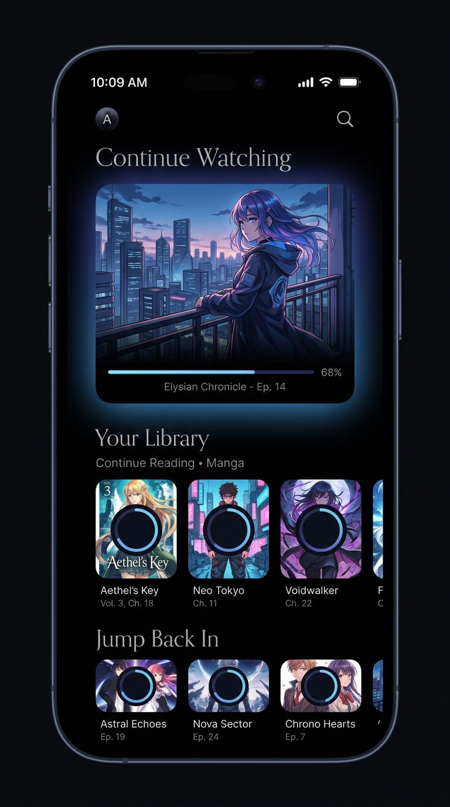
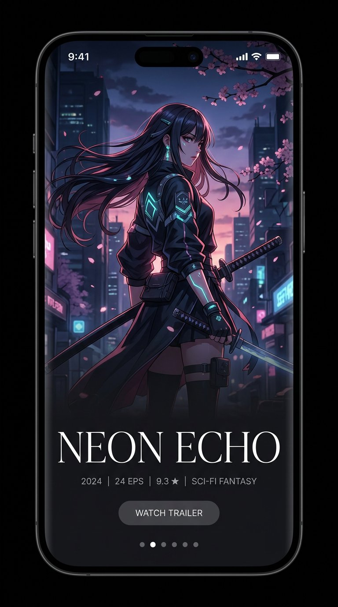
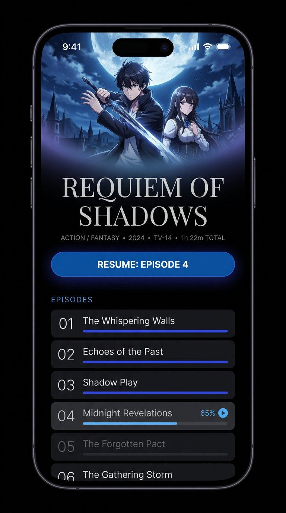

Sora.
A resume-first media player that asks a different question than the apps it replaces. Not "what do I own?" — but "what do I continue?"
Sora opens on the single thing you are most likely to tap.
Everything else is one gesture away.
— § 1 · The core insight

Concept 01
Continuum — the queue.
Zero bottom bar
removed
Modes
Continuum · Canvas
Migration
none required
Palette
ambient + #08090C
The problem being solved
The Phase 1a shell looked like Tachiyomi/Aniyomi. That was not a styling accident — it was information architecture.
The app shipped with:
- a bottom navigation bar,
- a top-level destination literally called Library,
- whose content is a grid of covers sorted by title.
Every app built on that skeleton reads the same regardless of colour or corner radius, because the skeleton is the identity. Restyling it does not help. The fix is to change what the home screen is about.
Tachiyomi's grid answers
"What do I own?"
Sora's user already knows.
"What do I continue?"
MediaUnit stores progressPercent, currentPage/totalPages and lastPositionMs. The resume queue is a query over data that already exists.
Two complementary modes
Direction
Two surfaces, chosen because they answer different questions. One for what you already own, one for what you don't yet know.
Continuum
"Where was I?"
A progress-first queue. Cover art is sized by relevance, not grid position. The most-resumable item is the largest element on screen.

Canvas
"What's out there?"
Full-bleed, one title at a time, poster-gallery. Correct for unfamiliar titles you are evaluating; deliberately not used for the library.
Considered · Rejected
02 · Shelf
Physical-media skeuomorphism. Highest novelty, but ages badly, fits manga far better than anime, and depends on spine artwork AniList does not reliably provide. Recorded here so the decision is not relitigated by accident.
Screens
§ 4.1
Home — the queue
Concept 01 · Continuum
Vertical scroll, three bands:
Hero — 'Continue'
~45% of viewport. Full-bleed artwork, rounded, with a thin progress line across the bottom edge and an ambient glow bleeding into the background. One tap resumes playback/reading directly — it does not go to the detail screen. This is the app's primary action.
Rails — 'Continue reading' / 'Continue watching'
Horizontal LazyRows of medium cards, each with a thin progress indicator. Split by media type so a manga reader is never forced past anime.
Rail — 'Jump back in'
Started but stale (untouched > 14 days). Separated because "resume episode 4 of 12" and "you abandoned this in March" are different intents.
Empty state
The hero becomes a single full-width invitation to pick a folder — the SAF entry point — instead of an empty grid.
Ordering (explicit)
lastPositionMs/currentPage recency, weighted by completion — a unit at 80% outranks one at 5%. Fully-watched units drop out; the next unit in that series takes their place.
§ 4.2
Detail
Concept 04 · Continuum detail
- Top ~45%: full-bleed key art fading to black, arriving via shared-element transition from the tapped cover.
- Large thin-serif title; one compact metadata row (year · type · rating · genres). AniList synopsis is collapsed to 3 lines behind "more" — it is reference material, not the reason you opened the screen.
- One wide Resume pill, labelled with the actual next unit ("Resume · Episode 4"), never a generic "Play".
- Unit list: number, title, thin progress line. Watched rows dim rather than vanish. The in-progress row is visually distinct.
- Volume units show 142/310 prominently — since a volume spans multiple sessions.

§ 4.3
Discover — Canvas
Concept 03 · Canvas
Full-bleed poster per title, vertical swipe between titles, horizontal swipe between shelves (Trending / Seasonal / Recommended). Metadata sits over a bottom scrim. One action: Add to library.
For unfamiliar titles the artwork is the information. This is also where AniList's rate limit is friendliest — one title on screen means one prefetch ahead, not a grid of 30 requests.
§ 4.4
Player and Reader
Unchanged in intent from the brief; both are zero-chrome and full-screen. The design system applies only to their overlay controls: same type scale, same accent, controls fade after 3s. Detailed in their own phases.
Visual language
Colour
#08090C
Base (ink)
Near-black, not Material elevated greys. True black makes artwork the only light source and is cheaper on OLED.
#4A90E2
Brand / fallback
Static fallback seeded for pre-Android-12 devices and any cover whose extraction fails.
dynamic
Ambient accent
Dominant colour of the current cover, desaturated and darkened. The app's mood follows the content.
Ambient extraction in context
the app's mood follows the content
Dynamic colour (Material You) applies to system surfaces only; content surfaces use extraction so the app is not at the mercy of the wallpaper.
Type
Deliberate two-family contrast, since single-family Material type is part of the generic look.
Display · titles
Sora
Cormorant Garamond
Light 300
Thin high-contrast serif. Editorial, unexpected in this category, and the reason the renders read as 'premium' rather than 'utility'.
Body · labels · UI
Resume · Episode 4
Inter
Regular 400 / Medium 500
Platform sans, small and quiet. Titles are large — a series title at 32sp+ is a deliberate statement that content outranks chrome.
I
Shape
Cards: 16dp radius. Hero: 24dp.
II
Depth
From glow and scrim, not Material elevation shadows.
III
Motion
Shared-element cover → detail; hero parallax on scroll; content cross-fades, chrome never slides. Respects Settings.Global.ANIMATOR_DURATION_SCALE for reduced-motion users. Predictive back (Android 14+) hooked into the shared-element return.
non-negotiable
Accessibility
Easy to lose in a dark cinematic design. Every item below is a hard requirement, not a guideline.
Contrast over artwork
Text over artwork always sits on a scrim guaranteeing ≥ 4.5:1; the scrim is computed against the extracted colour, not assumed.
Ambient luminance
Ambient accent is luminance-clamped so a low-contrast cover cannot produce unreadable accents.
Glyphs are labelled
Every glyph-only control (avatar, search, compass) carries a contentDescription.
Touch targets
≥ 48dp even where the visual is smaller.
Gesture parity
Gesture navigation has a non-gesture equivalent: swipe-to-Discover is also the compass glyph; pull-to-search is also the search glyph.
⚠ No function is gesture-only — this is the most common failure mode of chrome-less designs.
What this changes in existing code
MediaUnit/LibraryEntry need no migration, which is the main reason this redesign is affordable now rather than after Phase 5.
Open questions
01
recommended · keep extractionBrand blue
Ambient extraction largely overrides #4A90E2 in-app. Keep extraction (recommended), or keep the blue dominant?
02
?Serif display face
Bundling a font adds ~200KB and needs a CJK fallback for 空. Bundle, or use the platform serif?
03
?Discover as a pager page
vs. reachable only from a glyph.
04
recommended · land nowPhasing
Land the shell now (before Phase 2 builds screens on the old one), or after?